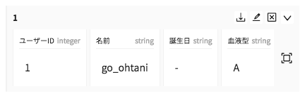
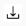

テーブルコンポーネントを操作する

テーブル内では、
- 行の開閉
- アクションの実行
- クリップボードコピー
- セルデータの全件表示
等を行えます。
行の開閉

行の開閉を行うにはテーブル行右上に配置された開閉ボタンをクリックして下さい。行名クリックでも開閉を行えます。
アクションの実行

行に対するアクションの実行を行うには、テーブル行右上のアクションボタンをクリックして下さい。アクションボタンのアイコンはアクション内容によって異なります。swaggerに定義された分だけアクションボタンが表示されます。
クリップボードコピー

セルをクリックすると、セル内容がクリッピボードにコピーされます。
全件表示

全件表示ボタンをクリックすると、行の全セル情報を表示できます。セル数が多くスクロール表示では見辛い時に便利です。